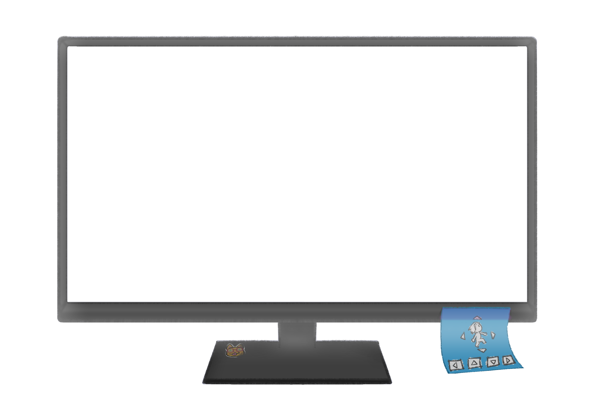

<!-- game-viewer.component.html -->
<div class="game-container">
  <button class="back-home-btn" (click)="volverAProjects()"> ← </button>
  <div class="tooltip-card">
    Usa <strong>← ↓ ↑ → </strong> para moverte <br><br>
    Presiona <strong>Espacio</strong> para saltar
  </div>
  <div class="monitor-container">
    <iframe
      [src]="safeUrl"
      class="unity-frame"
      frameborder="0"
      allowfullscreen
    ></iframe>

    <!--  -->
  </div>
</div>


